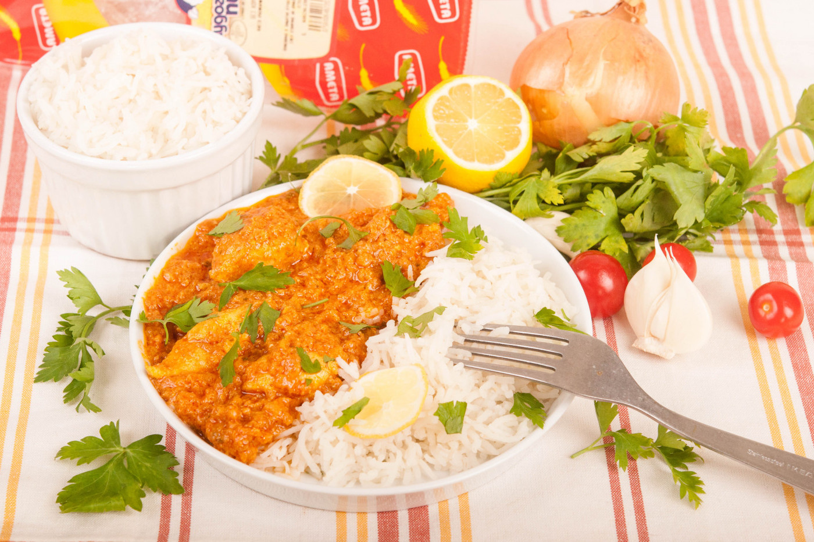

Рецептата за пиле тика масала е добре позната на всички, които са живели или посещавали за по-дълго време Великобритания. Наситената с много аромат и вкус рецепта е характерна за острова, макар пиле тика масала да е индийско по произход. Крехко и ароматно пиле върху канапе от ориз звучи познато за българския вкус, но на практика е съвсем различно от традиционните варианти, които познаваме тук. Купуваме едно вкусно качествено българско пиле, каквото е Лудогорското пиле, избираме екзотични, но любими подправки и се впускаме в това вкусно приключение наричано рецепта за пиле тика масала.
📖
Лесна
⏱️
55 мин.
🍴
6